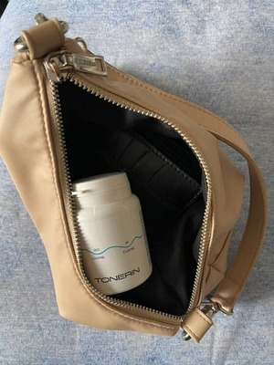

DRAUDŽIAMAS ATIDARYMAS: Dirbtiniai raudonieji kraujo kūneliai gali reguliuoti kraujospūdį, sustiprinti kraujagysles ir sustiprinti imunitetą!

Kito perdavimo filmavimo aikštelėje apėmė gėda, kuri mokslo „šviesuolius“ įstūmė į balą. Vienas iš pakviestų ekspertų staiga pradėjo kalbėti ne pagal scenarijų. Savo pareiškimu jis pribloškė studijos publiką. Bet ypač atiteko pareigūnams .
Širdies chirurgijos srities specialistas atvirai pareiškė: „Jūs užsikimšote informacijoje virusologijos, kuris tvirtina, kad gyvena milijonai žmonių visame pasaulyje. Kodėl niekas nekalba apie širdies ir kraujagyslių sistemos problemas? Kodėl visi tylite, kad jau yra priemonė, padedanti stabilizuoti spaudimą?
Spaudimas! Štai kas yra pagrindinis žmonių žudikas. Ne tik Europoje, bet ir visame pasaulyje. Ir jūs visi apsimetate lyg taip turi būti. Jūs nepastebite pažangių įrankių, kurie padėtų išspręsti šią problemą.
Širdies ir kraujagyslių sutrikimai yra pirmoje vietoje tarp patologijų pasaulyje pagal gyvybių skaičių. 94% širdies priepuolių ir insultų atsiranda dėl aukšto kraujospūdžio. 89% atvejų padidėjęs spaudimas širdies priepuolio ir insulto metu baigiasi mirtimi. Jei kalbame apie konkrečias vertes, tai slėgio šuoliai yra maždaug 77–78% mirtinų „natūralių“ pasekmių priežastis. Absoliučiais skaičiais — tai yra, maždaug 1,5 milijono gyvenimu, metai, metai, ir jūs įvertinate galvas ir įdiegiate neįtikėtinas priemones, kurios dabar yra nenaudingos.
Žmonės kenčia ne dėl viruso, o dėl susidėvėjusios širdies ir kraujagyslių! Prisiminkite tai kartą ir visiems laikams! - ginčijosi vienas iš pakviestų ekspertų Kremeris, bet kiti dalyviai tiesiogine to žodžio prasme puolė ant jo, užkimšdami burną.
Apskaičiuota, kad visame pasaulyje hipertenzija serga 1,28 milijardo 30–79 metų
suaugusiųjų, kurių dauguma (du trečdaliai) gyvena mažas ir vidutines pajamas
gaunančiose šalyse.
Apskaičiuota, kad 46% suaugusiųjų, sergančių
hipertenzija, nežino apie šios ligos buvimą.
Juokingiausia ir liūdniausia tai, kad 99,87% sunkių virusinių infekcijų atvejų yra žmonės, turintys kraujagyslių problemų! Su spaudimu. Su širdimi. Jei šių pažeidimų nebūtų, viską ištvertų beveik nepastebimai. Ir tai yra pagrindinė rizikos grupė. Ir vėlgi, niekas apie tai nekalba, nes iš karto kils klausimas – ką jūs darote, kad palaikytumėte kraujagyslių ir žmonių širdies sveikatą?
Studijoje kilo sumaištis. Ekspertai pradėjo ginčytis, pertraukdami vienas kitą. Transliacija buvo skubiai sustabdyta ir greitai paleistas reklamos blokas. Kremeris neištvėrė ir paliko studiją.
Publika šį įvykį prisiminė ilgai.
Nusprendėme ištirti ir apklausti Kremer atskirai.
Atsakydamas į jūsų klausimus: Kremer
Nusipelnęs kardiologijos srities specialistas, dešimčių mokslinių straipsnių širdies patologijų tema autorius, mokslininkas, šiuolaikinių spaudimo stabilizavimo ir kovos su kitais širdies ir kraujagyslių sutrikimais priemonių kūrimo dalyvis. Jį dažnai kviečia skaityti paskaitos garsiausios JAV institucijos. Darbo patirtis - 48 metai.
Reporteris: "Kremer, atrodo, kad visi tavo kolegos žino apie skandalą per televiziją. Kaip tu nebijai tokio poelgio?"
Kremer: Supratau visas rizikas, bet tiesiog nebegalėjau ilgiau tylėti. Neįmanoma pilti iš tuščio į tuščią ir nepasiūlyti konkretaus problemos sprendimo.
Džiaugiuosi, kad vėl susisiekėte su manimi, nes galiu pakartoti savo žodžius. Pandemija praeis, bus vakcina, pasaulis ją išgyvens, kaip ir bet kurią epidemiją anksčiau. Bet godumo ir nuoširdumo virusas liks su mumis, bijau, kad amžinai. Vakcina nuo šio viruso dar nesukurta.
Reporteris: "Apie ką konkrečiai kalbate?"
Кremer: Yra patologijų, su kuriomis mums nėra įprasta kovoti įprastai. Dirbu su širdies ir kraujagyslių sutrikimais, užsiimu infarktų ir insultų patyrusių žmonių reabilitacija. O mano srityje apgaulė yra visur.
Esu tikras, kad taip pat raumenų ir kaulų sistemos, virškinimo trakto ir bet kurioje srityje jie iš esmės tik palengvina būklę, bet nesugrąžina visiškos sveikatos.
O to priežastis – farmacijos korporacijos ir jų atstovai, kurie papirkinėja specialistus visose Europos šalyse. Ir dabar, kai jie gąsdina virusą nuo kiekvienos geležies, įmonėse tai paprastai siaučia. Galite parduoti testus, dezinfekavimo priemones, įvairius produktus. O mirtingumo atveju viską kaltinti epidemija. Visa tai matau ir jaučiuosi pasibjaurėjęs.
Neturime teisingo veiksmų algoritmo kovai su širdies ir kraujagyslių sutrikimais
Reporteris: "Taigi jūs norite pasakyti, kad visos šiuolaikinės priemonės slėgiui normalizuoti nėra veiksmingos?"
Кremer: Prekės nuo spaudimo, kurios oficialiai išrašomos žmonėms, atlieka vieną svarbią funkciją – pumpuoja pinigus iš žmonių kišenių į oligarchų kišenes.
Tai legalūs narkotikai. Spręskite patys. Žmogus išgeria tabletę, jo būklė pagerėja. Priemonės veikimas sustoja ir slėgis vėl pakyla. Taip veikia visi vaistai. Norint gerai jaustis, reikia ieškoti naujos „dozės“.
Svarbiausia suprasti štai ką: avarinėse situacijose „cheminės“ priemonės reikalingos ir svarbios. Jie gelbsti gyvybes, kai reikia skubios pagalbos. Pavyzdžiui, Pirmajame pasauliniame kare heroinas buvo naudojamas mūšio lauke, kad sužeistieji nemirtų nuo skausmo šoko.
Bet jei nuolat geri tabletes, jos ardo organizmą. Lygiai taip pat kaip heroinas. Ne taip greitai, bet veikimo principas tas pats. Ir norėdami atsikratyti šalutinio poveikio, jie jums parduos daugiau tablečių. Ir dar. Ir dar. Kuo daugiau, tuo geriau privačioms vaistinėms ir farmakologiniam verslui.
Reporteris: "Bet žmonės metų metus gyvena tokiomis priemonėmis!"
Кremer: Narkomanai irgi gali gyventi gana ilgai. Bet kas tai per gyvenimas?
Kai skauda sąnarius. Kai ne seni vyrai, kiek daugiau nei 50 metų, užsikrečia prostatitu ir praranda potenciją. Kai sutrinka inkstai ir pradeda kankinti edema. Iš pradžių tinsta kojos, todėl gali būti sunku vaikščioti. Tada vidaus organai. Taip, kad skrandis taptų statinės formos.
Kai kurios tabletės, vartojamos ilgą laiką, paprastai yra onkogeninės. Pažiūrėkite į vėžio statistiką – tai tikra epidemija.
Jau nekalbu apie tokias smulkmenas kaip miego sutrikimai, spengimas ausyse, regos ir klausos praradimas. Sąrašas gali būti ilgas. Ir yra tik viena priežastis – susidėvėję nešvarios kraujagyslės, kurių niekas nevalo. Nors produktas jau yra ir rodo puikius rezultatus.
Reporteris: "Programos filmavimo metu bandėte kalbėti apie proveržio priemonę spaudimui stabilizuoti ir kraujagyslėms valyti, tačiau jie tiesiogine prasme jūsų neklausė. Kas tai per priemonė? Kodėl privačios vaistinės į jo pavadinimą reaguoja kaip vampyrai į saulės šviesą?"
Кremer: Aš pradėjau kalbėti apie . Tai visapusiška sveikatingumo programa, skirta kontroliuoti kraujospūdį, išvalyti kraujagysles, apsaugoti širdį ir išlaikyti aktyvius vyresnio amžiaus žmones.
yra Europos molekulinės biologijos centro plėtra. Jis taip pat dažnai vadinamas „dirbtiniais raudonaisiais kraujo kūneliais“. Mat, priemonė padeda paskatinti jaunų raudonųjų kraujo kūnelių gamybą, kurios užsiima kraujagyslių valymu ir „taisymu“.
padeda išvalyti kraujagysles ir daugelį metų stabilizuoti spaudimą. Jo nereikia vartoti nuolat.
Už šio įrankio sukūrimą mūsų mokslininkų komanda gavo tarptautinį terapinės biologijos apdovanojimą. Už naujovišką proveržį šalinant kraujagyslių patologijas.
Atrodytų, po tokio pripažinimo privačios vaistinės turėtų stoti į eilę dėl teisės parduoti . Jie turėtų priimti šį produktą. Bet ne, visiška, mirtina tyla. Atrodė, kad niekas nepastebėjo proveržio.
O farmacijos verslo atstovai kalba apie ji su neapykanta. Jie turi šimtus produktų, pardavimo ir pajamų planų. Ir vienas negali įgyvendinti šių planų. Išgėrę žmonės kartais pamiršta kelią į privačią vaistinę.
Todėl tokia neapykanta . Pajuodinti jo neįmanoma. Vis dėlto yra tarptautinis pripažinimas, sertifikatai, moksliniai straipsniai, tūkstančiai patenkintų vartotojų. Todėl buvo pasirinkta boikoto strategija. Apsimeskite, kad neegzistuoja. Ir kai aš pradėjau apie jį kalbėti eteryje, tai sukėlė neslėpta agresiją prieš mane.
Pradeda organizmo automatinį atsinaujinimą
Кremer: Pagrindinis tikslas - atkurti kraujagysles. Tai pamatas, ant kurio stovi jūsų sveikata.
padeda atkurti kraujagysles 3 etapais:
- Suardyti cholesterolio plokšteles.
- „Ištaisyti“ kraujagyslių sienelių pažeidimus.
- Pagerinti nervinių impulsų laidumą iš smegenų.
Atkūrus kraujotaką ir sustiprėjus kraujagyslių sienelėms, prasideda grandininė organizmo atkūrimo reakcija. Paleidžiamos paslėptos imuninės jėgos ir kūnas pradeda gydytis pats.
Šis savaiminio gijimo procesas vadinamas autoregeneracija. Šiuos mechanizmus nustato gamta, o yra katalizatorius, raktas, kuris „paleidžia“ automatinę regeneraciją.
Galite pagerinti savo sveikatą namuose!
Reporteris: "Ką galite gauti po kurso?"
1. Spaudimas, kaip pas atronautą.
Pirma, tai padeda stabilizuoti spaudimą ir ilgam pamiršti problemą, prie jos negrįžtant kelerius metus. Reguliariai vartojant , kaip taisyklė, atnaujinamas kūno kraujagyslių tinklas. kraujagylės tampa elastingos ir tvirtos. Kitaip tariant, kraujagyslės atgyja ir be problemų „užgesina“ kraujospūdžio svyravimus. Nesvarbu, ar tai dėl nervų, ar dėl fizinio aktyvumo, atnaujinti kraujagyslės kompensuoja bet kokį kritimą ir išlaikys stabilų slėgį nuo 120 iki 80.
2. Smegenų veiklos gerinimas.
Po kurso gali pagerėti smegenų kraujotaka.
Žmonės entuziastingai pastebi, kad pas juos:
- Gerėja atmintis.
- Miegas normalizuojasi, dingsta letargija ir silpnumas.
- Nustoja spengti ausyse.
- Galvos skausmai sustoja.
3. Regėjimo aštrumo gerinimas, ragenos atstatymas.
padeda išvalyti ne tik dideles kraujagysles ir arterijas, bet ir mažiausius kapiliarus. Jų ypač daug akyse. Dėl to atsinaujina tinklainės ląstelės ir pagerėja akių raumenų tonusas.
- Regėjimo aštrumas gali pagerėti nuo 0,5 iki 2,1 vieneto.
- Paprastai akispūdis normalizuojasi.
- Gali sumažėti kataraktos požymių.
4. Edemos pašalinimas.
Gali būti atkurta tinkama inkstų veikla ir skysčių apykaita organizme. Inkstai nustoja sulaikyti vandenį, nereikia vartoti diuretikų.
- Vis mažiau skauda ir tinsta kojos.
- Sumažėja skrandis, nes atslūgsta organų tinimas.
- Skystis išeina iš plaučių, tampa lengviau kvėpuoti.
5. Hemorojus ir prostatitas jūsų nevargins.
Ryškiausios ligos dėl kraujagyslių:
- Varikozė.
- Hemarojus.
- Prostatitas.
- Impotencija.
6. Širdies atkūrimas.
Aortos valymas teigiamai veikia širdies raumens tonusą. 93% atvejų tachikardija išnyksta, 99% išemija išgydoma.
- Širdies ritmas ir pulsas normalizuojasi.
- Skausmas širdyje dingo.
- 17 kartų sumažėja infarkto rizika.
7. Imuniteto funkcionavimo gerinimas.
Gali pagerėti kaulų čiulpų, dalyvaujančių imuninių ląstelių gamyboje, aprūpinimas krauju. Dėl to padidėja organizmo apsauga.
Imunitetas - tai gynėjas ne tik nuo virusų. Pagrindinė stiprios imuninės sistemos funkcija yra apsaugoti nuo vėžio ląstelių. Stipri imuninė sistema laiku atpažįsta ir sunaikina vėžines ląsteles. Tai nesukelia visaverčio naviko.
Imuninė sistema, kuri veikia bent 50 proc., jau yra neįveikiama kliūtis virusams. Ir tai šiandien taip pat labai svarbu.
Didžiausio privačių vaistinių tinklo pirmininkas Nikolajus Milkovičius padėjo ragelį, išgirdęs apie
Nicholas Milkovich, vieno didžiausių privačių vaistinių tinklų Europoje vadovas.
Paskambinome visoje Europoje žinomo privačių vaistinių tinklo vadovui ir norėjome sužinoti, kodėl nėra jokioje privačioje vaistinėje.
– Tomai, sveiki! Ar galite man pasakyti, kodėl privačios vaistinės ignoruoja ? Jūs girdėjote apie jį?
– Kodėl jūs užsiimate provokacijomis!? Aš nesiruošiu atsakyti į tokius klausimus!!! Tai visai ne jūsų reikalas!
– Signalas...
Kaip gauti
Reporteris: "Po tokio pokalbio paaiškėjo, kad privačiose vaistinėse nėra ir nebus. Bet jūs vis tiek galite jį gauti, tiesa?"
Кremer: Taip, galite užsisakyti internetu tiesiai iš gamyklos.
Reporteris: "Kodėl galima išrašyti tik internetu?"
Кremer: Tai padaryta dėl trijų priežasčių:
- Kokybės garantija. klientui siunčiamas tiesiai iš gamyklos.
- Apsauga nuo tarpininkų. Kad niekas negalėtų perpardavinėti 10-20-30 tūkst.
- Greitas tikslingas pristatymas.
Gauti dabar!
Кremer: Norėdami gauti iki 50% nuolaidą socialinei pagalbai, spustelėkite bet kurį toliau esantį laukelį, kad atidarytumėte nuolaidą.
Laikas vykdyti akcija - su 19.05.2022 metų iki 24.05.2022 metų (imtinai)! Po to produktą bus galima įsigyti tik pagal rinkos vertę!
DĖMESIO: Pagal akcijų platintojas nuo iki 24.05.2022 metų (imtinai), galima gauti nuolaida 50% už . Reklaminių prekių kiekis ribotas!

Aptarimas
Silvija Dargienė, nenurodyta
Užsisakiau akcijai, iškrito 50% nuolaida, išėjo vis tiek centas! Atnešė antrą dieną per kurjerį. Slėgis kankino labai stipriai. Dabar viskas gerai, net negaliu patikėti.
Marija Pocienė, m. Vilnius
Išsklaidyčiau visus ministrus, jie visą laiką meluoja, šoka pagal tų, kurie jiems pinigus duoda!! Žaviuosi šio gydytojo drąsa, bet man atrodo, kad karjeros jis nebeturės.
Dovilė Ajauskienė, m. Šiauliai
Jei ne, jūs niekada nežinotumėte apie .
Ir tikrai po poros metų manęs
šiame pasaulyje nebūtų. Jūs gi matėte mane anksčiau...
Siunta, beje, atėjo
labai greitai.
dabar visada yra mūsų pirmosios pagalbos vaistinėlėje.
Kamilė Munikienė, m. Kaunas
Daug metų kentėjau nuo hipertenzijos, sąmonės netekimo, darbe net pripratau. Šiek tiek pasikeitė oras - spaudimas šokinėja, sunerimau - viskas, iš karto be jėgų. Naktį apėmė tachikardija. Ekspertai nuolat gąsdino insulto galimybe, nes kraujagyslės neatlaiko tokių svyravimų. Buvo labai baisu, nes mano žmona mirė nuo insulto. Apie sužinojau atsitiktinai, aptikau paminėjimą straipsnyje ir nusprendžiau pabandyti. Jau keletą mėnesių pamiršau apie silpnumą ir slėgio šuolius. Jaučiuosi energinga ir net atjaunėjusi. Aš visiems rekomenduoju!

Joana Nermitkinienė m. Kaunas
Kai pradėjau gerti , net neįsivaizdavau, kad toks poveikis bus. Išnyko galvos skausmas (galvos svaigimas), dingo dusulys, išnyko visos ligos apraiškos. O dabar, būdamas 53 metų, galiu duoti šansų daugeliui 30-mečių. Labai ačiū, kad atvėrėte žmonėms akis, papasakojote apie problemą. Nuo paprasto specialisto tokio neišgirsi.
Albinas Žičkus, m. Jurbarkas
Neseniai per televiziją žiūrėjau laidą apie hipertenzija sergančius pacientus. Ten kalbėjo apie šį įrankį, gyrėsi, kad sukūrėme geriausią pasaulyje priemonę indams valyti. Man pasirodė, kad buvo net ministras.

Ilona Rosienė m. Jonava
Taip pat užsisakiau, pavyko gauti nuolaidą akcijai! Žadėjo pristatyti per 2 dienas, labai laukiu!
Ugnė Šumskienė, m. Kaunas
Ilgą laiką kentėjau nuo galvos skausmo. Spaudimas šoktelėjo, porą savaičių gėriau šią priemonę, viskas praėjo. Ačiū!
Fausta Rimkė, m. Ignalina
Ilgą laiką galvojau apie kraujagyslių valymą, neradau įprastos priemonės. Atrodo, kad tai verta, ir Kremeris taip pat rekomenduoja. Pasitikiu juo, tai žmogus iš didžiosios raidės.

Petrutė Vilkė, m. Vilnius
O tai ne apgaulė? Kodėl Internete reklamuojama?

Jonas Petrauskas m. Kaunas
Pritariu rekomendacijoms. Kai pradėjau gerti, pirmomis dienomis jau jaučiau
rezultatą. Visiems patariu .
Vilius Gilys, m. Šiauliai
Milda, Jūs straipsnį skaitėte apskritai? Jie parduodami internete, nes vaistinėse yra graibstytojų ir netgi nori iš to užsidirbti! O kokios gali buti skyrybos, jei atsiskaitoma tik gavus ir net akcine kaina? Užsisakiau - atėjo pas mane paštu, viską patikrinau, viskas tvarkoje ir paėmiau. O internete dabar yra labai daug – nuo drabužių ir batų iki buitinės technikos ir baldų.
Leonas Kontautas, m. Nemėžis
Naudojome kartu su žmona, pas abu gerokai pagerėjo savijauta. Iš tiesų, tarsi tapome jaunesni, buvo daugiau jėgų ir noro. Spaudimas grįžo į normą. Galvos skausmo nebėra. Ačiū jums labai!

Monika Linė, m. Kaunas
3 mėnesius nudojau prižiūrima specialistų. Jokios naudos. Kažkoks reklamuojamas produktas ir tiek. Vartojau dar pusę metų. Tada per televiziją pamačiau programą, jie rekomendavo ! Viešpatie, stebuklinga priemonė. Jau kaip metai nebuvo spaudimo šuolių. Naudojau visą mėnesį . Ačiū gamintojams milžiniškas! Žemai lenkiuosi.


Marina Balžienė, m. Kaunas
Aš užsisakiau savo tėvams prieš bet kokias išmokas. Abu serga hipertenzija. Priemonė tobula Jau pirmomis dienomis jie nustojo gerti visokius vaistus ir nuodyti savo organizmą! Spaudimas grįžo į normą. Dabar rekomenduojame Jums !
